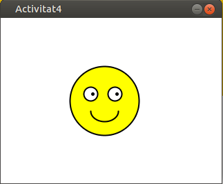

Tema 4. Programació Modular
Introducció
Anem a entrar en un món que es basa en la màxima: "Divideix i venceràs". Si fem una analogia amb l'estratègia bèl·lica, podriem dir que en aquells casos que l'enemic és molt gran per a les nostres possibilitats, seria interessant poder, d'alguna forma, dividir-lo en trossos més xicotets de tal forma que el podem afrontar.
Què és?
La programació modular és un paradigma de programació que consisteix a dividir un programa en mòduls o subprogrames per tal de fer-lo més llegible i manejable
També podriem dir que és una evolució de la programació estructurada per solucionar problemes de programació més grans i complexos del que aquesta pot resoldre.
En l'aplicar la programació modular, un problema complex ha de ser dividit en diversos subproblemes més simples, i aquests al seu torn en altres subproblemes més simples encara. Això s'ha de fer fins a obtenir subproblemes prou simples com per poder ser resolts fàcilment amb algun llenguatge de programació. Aquesta tècnica es diu refinament successiu, divideix i venceràs o anàlisi descendent (Top-Down).
Un mòdul és cadascuna de les parts d'un programa que resol un dels subproblemes en què es divideix el problema complex original. Cadascun d'aquests mòduls té una tasca ben definida i alguns necessiten d'altres per poder operar. En cas que un mòdul necessiti d'un altre, pot comunicar-se amb aquest mitjançant una interfície de comunicació que també ha d'estar ben definida.
Si bé un mòdul es pot entendre com una part d'un programa en qualsevol de les seves formes i variats contextos, en la pràctica se'ls sol prendre com a sinònims de procediments i funcions. Però no necessària ni estrictament un mòdul és una funció o un procediment, ja que el mateix pot contenir molts d'ells. No s'ha de confondre el terme "mòdul" (en el sentit de programació modular) amb termes com "funció" o "procediment", propis de l'llenguatge que ho suporte.
White Stripes - Little Acorn (lletra) - Intro
When problems overwhelm us
And sadness smothers us
Where do we find the will and the courage to continue?
Well, the answer may come in the carrying voice of a friend
A chance encounter with a book
Or from a personal faith
For janette help came from her faith
But it also came from a squirrel
Shortly after her divorce
Janette lost her father
Then she lost her job
She had mounthing money problems
But Janette not only survived
She worked her way out of despondency and now she says
"Life is good again"
How could this happen?
She told me that late one autumn day when she was at her lowest
She watched a squirrel storing up nuts for the winter
One at a time he would take them to the nest
And she thought, "If that squirrel can take care
of himself with the harsh winter coming on
So can I
Once I broke my problems into small pieces
I was able to carry them
Just like those acorns
One at a time
Característiques
La modularitat en programació es considera la capacitat que té un llenguatge concret en dividir-se en parts o subprogrames (mòduls). Cadascun dels mòduls o parts que formaran part d'aquest programa, tenen una funció particular, són semi-independents i inclús es poden trobar en fitxers físics distints.
No hem de pensar mai en un programa com un tot sino com un conjunt de mòduls relacionats entre si on cada mòdul desenvolupa una tasca molt concreta independentment de la resta i que tots junts formen el programa o aplicació.
Avantatges
- El codi resultant és més net i fàcil d'entendre.
- Permet la divisió del treball.
- Es pot provar de forma independent, millorant així la recerca i correcció d'errades.
- Facilita la definició de variables al crear diversos àmbits.
Tipus de modularitat
Depenent del nivell de detall amb el que es tracten els mòduls, podem distingir tres tipus:
- Llibreries: conjunt de funcions o de mòduls que comparteixen una finalitat.
- Classes: les classes són definicions de possibles objectes. Ja ho veurem amb més detall al tema de programació orientada a objectes.
- Funcions o mètodes: codi que realitza un funció concreta. Una funció o mètode pot estar associat tant a una llibreria com a un classe.
Una funció és un tros de codi que realitza una funció concreta i de vegades torna algun valor com a resultat. A banda, la tècnica de programació modular també aporta alguns dels fonaments de la programació orientada a objectes com són: abstracció, encapsulament i modularitat.
Veiem amb més detall que és cadascun:
Abstracció
L'abstracció és la capacitat de, observada una realitat, quedar-se amb allò important o essencial i obviar el detall. Aquest concepte serà un concepte bàsic en l'evolució de la programació estructurada i modular cap a la programació orientada a objectes. Per exemple, per saber conduir un cotxe no necessite saber al detall el funcionament del seu motor sino on està l'accelerador, el fre i el volant.
Encapsulament
L'encapsulament és el procés d'emmagatzemar en un mateix compartiment els elements d'una abstracció que constitueixen la seua estructura i comportament. En altres paraules, l’ocultació d’informació, de forma que les dades internes d’un mètode, funció o procediment estan ocultes al món exterior, només es coneix d’ell la seua essència, és a dir, què podem fer amb ell.
Per exemple, amb freqüència es desenvolupa codi font o projectes en els que utilitzem la classe out, més concretament el mètode println. Out es troba dins de l’espai de noms (namespace) System i no és més que una classe d’aquest paquet. Dit en altres paraules. Out és una classe i println() és un mètode de la classe Out.
Modularitat
Aquesta propietat fa referència a la forma en la que els elements en programació orientada a objectes es troben organitzats en mòduls, facilitant així l’encapsulament i abstracció de la informació.
La modularitat permet dividir una aplicació en parts. Aquestes parts han de ser tan independents com puguen de la resta de mòduls així com també de l’aplicació principal. El motiu pel qual els mòduls han de ser el més independents possibles de l’aplicació és perquè així es podran reutilitzar en altres aplicacions més endavant.
Funcions en Java
Una vegada vistos els fonaments de la programació modular, augmentem el nivell de detall. A Java la modularitat s'implementa mitjançant l'ús de funcions. Una funció en Java és la concreció de la tècnica de programació modular, és a dir, un metode o procediment és un fragment de codi que realitza una funció concreta dins del nostre programa.
Però com s'escriu una funció en Java:
1 2 3 4 5 6 7 8 | |
Veiem i expliquem que significa cadascun dels elements que formen el codi anterior.
Què és què
Tots aquells elements que estan entre claudators són opcionals.
On:
- Accés: public, protected, private o package
- Modificador: static o final
- Tipus: int, boolean, float o qualsevol tipus predefinit per l'usuari.
- nomFuncio: cadena alfanumèrica significativa que indique el que fa la funció.
- nomArgument: paràmetres que se li passen a la funció. Aquestos paràmetres funcionaran com variables locals a la funció.
Per acabar veiem exemples concrets de com s'implementen les funcions o mètodes en Java. La primera funció el que fa és saludar dient "Hola món" cada vegada que s'utilitza. Las segona diu "Hola" junt amb el nom que es passa com argument i finalment la tercera funció el que fa és agafar la cadena de caracters que se li passa per paràmetre i la inverteix. Si no entens el que són paràmetres i arguments, no et preocupes, ho veurem al punt següent. Mira el següent exemple:
1 2 3 4 5 6 7 8 9 10 11 12 13 14 | |
Activitat 401. Modularitza el següent codi
El següent codi per a Processing IDE dibuixa una taula de billar amb dues boles negres, dues banques i dues roges. Modularitza el codi de tal forma que al mètode draw només hi haurà crides a mètodes definits per tu, concretament els següents mètodes:
- dibuixarTaula.
- dibuixarBolesRoges.
- dibuixarBolesNegres.
- dibuixarBolesBlanques.
Al codi teniu també el prototip de la funció dibuixarTaula() com a exemple.
1 2 3 4 5 6 7 8 9 10 11 12 13 14 15 16 17 18 19 20 21 22 23 24 25 26 27 28 29 30 | |
Paràmetres d'una funció
Les funcions o mètodes en Java no només serveixen per poder dividir i simplificar el codi sino que també es poden parametritzar, és a dir, se li poden passar arguments que bé utilitzen en la seua lògica interna o bé modifiquen el comportament del mètode en qüestió.
Què és un paràmetre ?
Els paràmetres són una forma d'intercanviar informació amb el mètode en qüestió. Poden servir per introduir dades per executar el mètode (entrada) o per obtenir o modificar dades després de la seua execució (eixida).
Hi ha alguns detalls al respecte dels paràmetres d'una funció:
- Una funció pot tindre una quantitat qualsevol de paràmetres, és a dir, poden tindre des de zero fins a un, dos, deu o cent paràmetres.
- Encara que poden ser més, normalment no sol passar de cinc màxim.
- Si la funció té més d'un paràmetre cadascun d'ells ha d'anar separat per una coma.
- Els arguments d'una funció també tenen un tipus i nom que els identifica.
- El tipus dels arguments pot ser qualsevol i no ha de tindre relació amb el tipus del mètode.
- Al rebre un argument res ens obliga a fer ús d'aquest dins del mètode.
- Els paràmetres poden passar-se per referència (es mantenen les modificacions que es facen dins del mètode) o per valor (no afectarien les modificacions a l'element original).
Una funció amb paràmetres en Java
1 2 3 4 5 6 | |
La funció anterior és un mètode, que si fem cas al nom, s'encarrega de dibuixar una bola. Aquesta funció té tres paràmetres:
- Un enter anomenat posX que representa la posició x on es dibuixarà la boleta
- Un enter amb nom posY que indica la posició y en la que es dibuixarà la boleta
- Un últim enter que es diu tam que li dirà a la funció quin serà el grandària de la boleta.
Com ja s'ha comentat anteriorment, és possible passar un o més valors a una funció quan es crida. Recordeu que un valor passat a una funció es diu argument. Dins la funció, la variable que rep l'argument es diu paràmetre. Els paràmetres es declaren dins dels parèntesis que segueixen a el nom de mètode.
Un paràmetre està dins de l'abast de la seua funció, i a banda de la seva tasca especial de rebre un argument, actua com qualsevol altra variable local.
Diferència entre paràmetre i argument
Ací hi ha un exemple simple de l'ús de paràmetres. Dins del programa següent podem observar com tenim una funció
1 2 3 4 5 6 7 8 9 10 11 12 13 14 15 16 17 18 | |
Com ja s'ha comentat anteriorment un mètode pot tenir més d'un paràmetre. Simplement declare cada paràmetre, separant un el següent amb una coma. Per exemple, la classe Divisor defineix un mètode anomenat esDivisor () que determina si el primer paràmetre és divisor de el segon.
Funcions amb més d'un paràmetre
1 2 3 4 5 6 7 8 9 10 11 12 13 14 15 16 | |
Activitat 402. Executa en Processing IDE
Passa el codi anterior a Processing i executa'l. Observa el codi amb atenció i digues si hi ha alguna funció amb paràmetres? Quins?
Finalment dir que els arguments poden ser literals, que corresponguen amb el tipus del paràmetre, o també poden ser variables, però que passa amb les variables que es passen com a argument si el paràmetre al qual s'assignen és modificat en temps d'execució? Es modifiquen també? Mirem la diferència entre valor i referència.
Pas per valor i pas per referència
Entrem en més detall sobre els paràmetres, que passa amb ells quan s'acaba l'execució de la funció o mètode si són variables locals?
En resum el pas per valor significa que al mètode, en la variable de l'argument li arriba una còpia del valor en el cas que es tracte d'un tipus de dades primitiu, és a dir, char, int, float, double, etc.. Mentre que el pas per referència en canvi, l'argument conté un punter amb l'adreça de memòria de la variable en qüestió.
Resum valor vs referència
-
Pas per valor: Es crea una còpia local de la variable dins de la funció.
-
Pas per referència: Es maneja directament la variable, els canvis realitzats dins de la funció li afectaran també fora.
En resum, si es passa un argument per còpia, tot allò que es faja al paràmetre dins del codi de la funció no afectarà a l'original mentre que si, per contra, l'argument es passa per referència, totes aquelles accions que es realitzen sobre el paràmetre li afectaran a l'argument original.
Fixa't en el següent codi:
1 2 3 4 5 6 7 8 9 10 11 12 13 14 15 16 17 18 19 | |
Activitat 403. Pas per valor i pas per referència I
Copia el codi anterior en Processing IDE i respon a les següents qüestions:
- Quins són els paràmetres i de quin tipus són els de la funció modificaTipusPrimitius?
- Quantes vegades es crida a la funció modificaTipusPrimitius?
- Quins argument es passen a cada crida?
- Què passa i per què a l'executar-se el codi anterior?
- Estan passant-se els arguments per valor o per referència?
Ara mira el següent codi:
1 2 3 4 5 6 7 8 9 10 11 12 13 14 15 16 17 18 19 20 21 22 23 24 25 26 | |
Activitat 404. Pas per valor i pas per referència II
Copia el codi anterior i respon a les següents qüestions:
- Quins són els paràmetres i de quin tipus són els de la funció modificaPersona?
- Quantes vegades es crida a la funció modificaPersona?
- Quins argument es passen a cada crida?
- Què passa i per què a l'executar-se el codi anterior?
- Estan passant-se els arguments per valor o per referència?
Sobre el return
Com ja hauràs vist, hi ha algunes funcions que comencen per void i altres que tenen altres tipus... açò el que torna la funció. Bàsicament la diferència entre una funció i un procediment des del punt de vista conceptual és si el mètode torna o no algun valor. Si torna és un procediment sino és una funció, però aquesta és només un qüestió conceptual ja que des del punt de vista tècnic (del codi) no hi practicament cap diferència entre funció i procediment a banda del fet que retornen un valor en Java.
Has de tenir en compte dues coses importants amb la sentència return:
- Qualsevol instrucció que es trobe després de l'execució de return, NO serà executada.
- És comú trobar funcions amb múltiples sentències return al seu codi, com per exemple en sentencies condicionals, però una vegada el codi execute una sentència return allò que vinga després no s'executarà.
- El tipus de valor que es torna en una funció ha de coincidir amb el tipus declarat a la funció, és a dir, si es declara int, el valor que ha de tornar ha de ser un nombre enter.
- En el cas de les funcions que no tornen res (void), també conegues com a procediments, poden usar la sentència return però sense cap valor i només s'usaria per acabar amb l'execució de la funció.
Funcions i procediments
1 2 3 4 5 6 7 8 9 10 11 12 13 14 15 16 17 18 19 20 21 22 23 | |
Activitat 405. Revisa conceptes
És el moment de revisar tots els conceptes vistos fins ara que no són pocs. Revisa el codi anterior i respon a les següents qüestions:
- Quants mètodes hi han al codi? (draw i setup no compten)
- Quin identificador tenen?
- Escriu el prototip (interfície) de cadascun dels mètodes que has trobat.
- Per a cada mètode respon: quants paràmetres tenen? Quin és el nom dels paràmetres i el tipus?
- Quins dels mètodes que has trobat són funcions i quins procediments? Raona la resposta.
Funcions: declaració i crida
Hem vist ja la gran part tècnica de com funcionen els mètodes en Java pel que fa a la part de sintaxis i les diferents paraules claus que s'utilitzen. En altres paraules, ja sabem construir funcions i procediments tant des del punt de vista tècnic (com és construeixen), com des del punt de vista semàntic (què signifiquen) però, com fem ús d'aquestes funcions o procediments?
Primer cal que distingim entre la declaració d'un mètode i la crida a aquest.
- Declaració d'un mètode: definició del procediment o funció on s'inclou tant la capçalera (interfície o prototip) i el cos (codi de la funció).
- Crida a un mètode: ús del mètode per mitjà d'una crida a aquest utilitzant el prototip i els paràmetres en cas de tenir-los.
- Prototip, interfície o signatura: la signatura d'un mètode és la combinació de nom, tipus de paràmetres, nom d'aquestos i ordre.
Per tal d'utilitzar una funció o mètode en Java hem de cridar a eixa funció. Una funció en Java es crida utilitzant el nom del mètode i entre parentesi s'han de passar els paràmetres que s'indica a la declaració de la funció. Aquestos paràmetres que es passen han de coincidir en número, si la declaració del funció té 3 paràmetres s'hauran de passar tres paràmetres, i també han de coincidir en el títol. Però millor vegem un exemple:
1 2 3 4 5 6 7 8 9 10 11 12 13 14 15 16 17 18 19 20 21 22 23 24 25 26 27 28 29 30 31 32 33 | |
Activitat 406. Copia i raona el codi anterior
Còpia el codi anterior, executa'l i raona el que està passant. Modifica el codi per tal que funcione correctament i mostre un resultat per pantalla.
Activitat 407. Crida als mètodes de forma correcta
A continuació vos he deixat un codi amb 4 funcions. Observeu-les i després feu ús de totes elles des de la funció draw.
1 2 3 4 5 6 7 8 9 10 11 12 13 14 15 16 17 18 19 20 21 22 23 24 25 26 27 28 29 30 31 32 33 34 | |
Detalls per cridar funcions
- El nom ha de coincidir exactament al moment de cridar, és l’única forma d’identificar-lo.
- L’ordre dels paràmetres i el tipus ha de coincidir.
- Cal tindre cura en el moment d'enviar els paràmetres, hem de fer-ho en el mateix ordre en que varen ser declarats i han de ser del mateix tipus.
- Cada paràmetre enviat també va separat per comes.
- Si una funció no rep paràmetres, simplement no posem res a l'interior de la parèntesi, però sempre deguem posar la parèntesi.
- Invocar una funció segueix sent una sentència normal i corrent en Java, així que ha de finalitzar amb ';' com sempre.
- El valor retornat per un mètode o funció pot ser assignat a una variable del mateix tipus.
- Si es tracta d'un procediment no es pot retornar valor algú.
- Una funció pot cridar a una altra dins de sí mateixa o fins i tot pot ser enviada com a paràmetre a una altra (mira el següent exemple).
Activitat 408. Copia i raona el següent codi
Passa el següent codi a processing, executa'l i raona el que està passant. Quin altre nom alternatiu li podriem posar a la funció per tal que aquest siga més significatiu?
1 2 3 4 5 6 7 8 9 10 11 12 13 14 15 16 17 18 19 20 21 22 23 24 | |
Activitat 409. Executa el codi en Processing IDE
Escriu el següent codi en Processing i executa'l.
1 2 3 4 5 6 7 8 9 10 11 12 13 14 15 16 17 18 19 20 21 22 23 24 25 26 27 28 29 30 | |

Activitat 410. Divideix-lo en funcions
Separa el codi en funcions, has d'afegir les funcions dibuixaCara, dibuixaUlls i dibuixaBoca seguint els prototips que et mostre a continuació.
1 2 3 4 | |
Activitat 411. Paràmetres coordenades
Modifica el codi anterior per tal que tant el codi que dibuixa els ulls com el codi que dibuixa la boca, estiguen en dues funcions: dibuixaUlls i dibuixaBoca. A aquestes funcions se'ls passarà com a paràmetres les coordenades x i y i a partir d'aquestes ha de dibuixar els ulls i la boca on corresponga.
1 2 3 4 | |
Activitat 412. Dibuixar cares - Ampliació
Amplia el codi anterior per tal que mostre el següent dibuix. Observa com ha de quedar el codi de la funció draw
1 2 3 4 5 6 7 8 9 10 11 12 13 14 15 16 17 18 19 20 21 22 23 24 25 26 27 28 29 30 31 32 33 34 35 36 | |
Activitat 413. Dibuixar peça domino
Emplena el codi de la funció dibuixaDomino(int,int) per tal que mostre la imatge següent.
1 2 3 4 5 6 7 8 9 10 | |
Activitat 414. Dibuixar peça dominó parametritzada
Què passa si en lloc de 5 i 4 passarem 6 i 6 per paràmetre? Dibuixa el que esperes que dibuixe?
Fes les modificacions necessàries al codi per tal que funcione com s'espera.
Ampliació: fes que el teu algorisme mostre totes les peces del dominó ordenades en files i columnes.
Pas d'objectes a funcions
Quan passem un tipus primitiu a una funció, es passa per valor. Però quan vam passar un objecte a una funció, la situació canvia dràsticament, perquè els objectes es passen per referència. Java fa aquesta cosa interessant que és una classe d'híbrid entre passar per valor i passar per referència.
A l'crear una variable d'un tipus de classe (un objecte), només varem crear una referència a un objecte. Per tant, quan passem aquesta referència a un mètode, el paràmetre que el rep es referirà a el mateix objecte que el referit per l'argument.
Això vol dir efectivament que els objectes actuen com si es passessin als mètodes mitjançant l'ús del pas per referència.
IMPORTANT: Els canvis en l'objecte dins el mètode es reflecteixen en l'objecte utilitzat com a argument.
Però vejam un exemple per tal que quede més clar:
1 2 3 4 5 6 7 8 9 10 11 12 13 14 15 16 17 18 19 20 21 22 23 24 25 26 27 28 29 30 31 | |
Eixida
1 2 | |
Explicació en imatges:
1.Primer: S'instancien els tres objectes ob1, ob2 i ob3.
1 2 3 | |

2. Segon: En la funció equalTo, es declara una referència de classe Demo amb un objecte obj i s'assigna inicialment null.

3. Tercer: En la primera crida al mètode equalTo (ob1.equalTo(ob2)), al paràmetre obj del prototip del mètode, se li passa l'argument 'ob2', és a dir, 'obj' passa a ser una referència a 'ob2' quan la següent sentència s'execute.
1 | |

4. Quart: Ara com podem observar, es crida al mètode equalTo sobre 'ob1' i 'obj' fa referència a 'ob2'. Donat que els valors 'a' i 'b' són els mateixos per ambdues referències, aleshores si la condició és veritat, tornarà true.
1 | |
5. Cinquè: De nou 'obj' es reassignarà a 'ob3' quan s'executa la següent sentència com s'ha fet al pas tercer.
1 | |

6. Sisè: Ara, com podem observar, el mètode equalTo es crida en 'ob1', i 'obj' fa referència a 'ob3'. Com que els valors 'a' i 'b' no són els mateixos per a les dues referències, aleshores torna false.
Activitat 415. Copia el codi
Copia i executa el codi anterior en Processing IDE
Recursivitat
Definició
En general, la recursivitat és el procés de definir alguna cosa en termes de si mateix i és una cosa semblant a una definició circular. El component clau d'un mètode recursiu és una declaració que executa una crida a si mateix. La recursivitat és un poderós mecanisme de control.
L'exemple clàssic de recursivitat és el càlcul del factorial d'un nombre. El factorial d'un nombre N és el producte de tots els nombres enters que es troben entre 1 i N. Per exemple, el factorial de 3 és 1 × 2 × 3, és a dir, és de 6.
El següent programa mostra una forma recursiva de calcular el factorial d'un nombre. Per a propòsits de comparació, també s'inclou un equivalent no recursiu (iteratiu).
1 2 3 4 5 6 7 8 9 10 11 12 13 14 15 16 17 18 19 20 21 22 23 24 25 26 27 28 29 30 31 32 33 34 35 36 37 | |
Eixida
1 2 3 4 5 6 7 | |
Stack Overflow
Les versions recursives de moltes rutines poden executar-se una mica més lentament que els seus equivalents iteratius causa de la sobrecàrrega addicional de les trucades a mètodes addicionals. Massa crides recursives a un mètode podrien causar un desbordament de la pila.
Com l'emmagatzematge per als paràmetres i les variables locals està a la pila i cada trucada nova crea una nova còpia d'aquestes variables, és possible que la pila s'acabe esgotant. Si això passa, el sistema de temps d'execució (run-time) de Java causarà una excepció. No obstant això, probablement no hauràs de preocupar-te per això a menys que una rutina recursiva es torne boja.
El principal avantatge de la recursivitat és que alguns tipus d'algoritmes es poden implementar de forma més clara i més recursiva del que poden ser iterativament. Per exemple, l'algorisme de classificació Quicksort és bastant difícil d'implementar de manera iterativa. A més, alguns problemes, especialment els relacionats amb la IA, semblen prestar-se a solucions recursives.
1 2 3 4 5 6 7 8 | |
En l'exemple anterior: Si es diu a fact (10), cridarà a fact(9), fact(8), fact(7), etc., però el nombre mai arribarà a 100. Per tant, no s'assoleix la condició base. Si la memòria s'esgota amb aquests mètodes en la pila, provocarà un error de desbordament de pila.
La API de Java
L'API Java és una interfície de programació d'aplicacions (API, per les seves sigles de l'anglès: Application Programming Interface) proveïda pels creadors de el llenguatge de programació Java, que dóna als programadors els mitjans per desenvolupar aplicacions Java.
Com el llenguatge Java és un llenguatge orientat a objectes, l'API de Java proveeix d'un conjunt de classes utilitàries per a efectuar tota mena de tasques necessàries dins d'un programa.
L'API Java està organitzada en paquets lògics, on cada paquet conté un conjunt de classes relacionades semànticament.